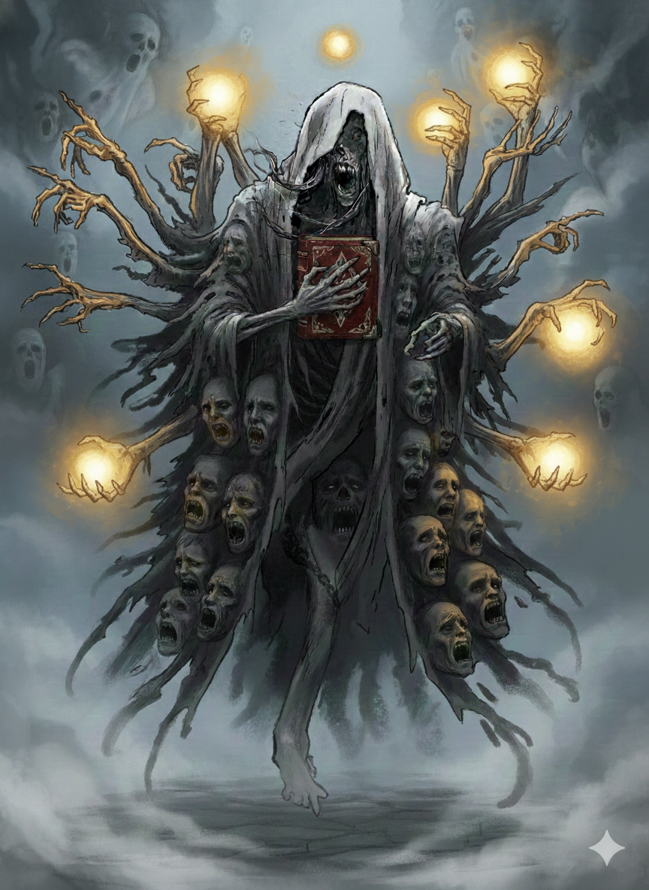
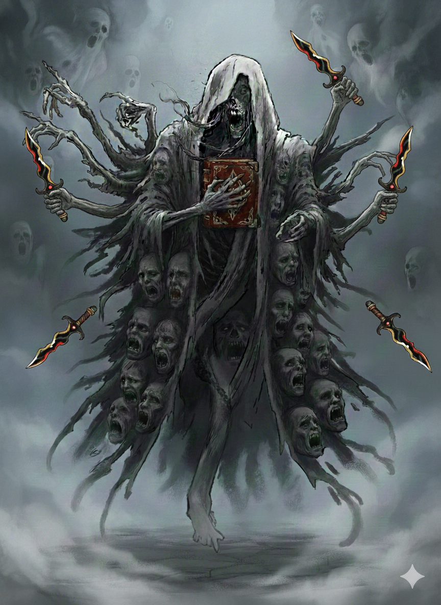

🏰 Curse of Strahd
Campaign Chronicle
📜 Table of Contents
- 1📝 00 - \nHealer Kit 9/10 charges
- 2Ready to Step Into the Mists Our Next Adventure Awaits
- 3📝 Lancelot
- 4Curse of Strahd level 2
- 5Curse of Strahd 1004 - game is up cya tonight
- 6📝 00 Quest Log
- 7📝 Session 06
- 8Curse of Strahd 1115
- 9Curse of Strahd 1115
- 10📝 Session 07
- 11📝 Session 08
- 12Curse of Strahd 1122
- 13📝 Session 10
- 14Vampires theyre still a thing 131 game is currently on
- 15📝 Session 11
- 16📝 Session 12
- 17📝 Session 13
- 18Curse of Strahd 37 - game is on
- 19📝 Session 14
- 20📝 Session 16
- 21📝 Session 16, cont'd
- 22📝 Session 17
- 23📝 Session 18
- 24📝 Session 19
- 25📝 Session 20
- 26📝 Session 21
- 27📝 Session 22
- 28Curse of Strahd
- 29📝 Session 23
- 30📝 Session 24
- 31📝 Session 25
- 32📝 Session 26
- 33📝 Session 28 - Death to Ravioli
- 34📝 Session 29 - The Grapes of Wrath
- 35📝 Session 30 - Maybe Touch the Staff
- 36📝 Session 31 - The Notetaker you Deserve
- 37📝 Session 32 - Vampire Druid Horseshit
- 38📝 Session 33 - Moloch Untouched
- 39📝 Session 34 - Highlight of My Week
- 40Curse of Strahd The Edge of the World The Whispering Wall
- 41Curse of Strahd Level 6 next session
- 42Curse of Strahd a ghostly communion
- 43Curse of Strahd Kavan The Rozana The Fanes The Keepers of the Feather Tarokka Reading
- 44Curse of Strahd Kavan The Rozana The Fanes The Keepers of the Feather Tarokka Reading
- 45📝 Session 35 - Leveling ain't easy
1 📝 00 - \nHealer Kit 9/10 charges
00 - \nHealer Kit 9/10 charges
2 Ready to Step Into the Mists? Our Next Adventure Awaits!
Friar Gregor Blackthorn: A devout yet troubled cleric, Friar Gregor Blackthorn seeks redemption through his relentless pursuit of the monstrous evils that haunt his family’s legacy.
Francis: Francis now roams the land as a hulking barbarian, driven by the thrill of the hunt and the whispers of a dark god urging him toward greater conquests.
Rachel: A talented halfling portrait painter with a bright smile and friendly charm, Rachel’s happy demeanor cleverly masks a roguish edge, hinting at a knack for navigating life's shadows when needed.
In for friday for session 0 should we do anything to prep? Buy that program? Download it I figure?
Make our sheets in it?
3 📝 Lancelot
Lancelot
Good boi
4 Curse of Strahd: level 2
Having explored the attic and uncovered some of the dark secrets of the Durst family, you return to the main floor of the house. With the battles against the sinister suit of armor and the deadly broom behind you, you feel a growing sense of competence. The horrors of this place have tested you, but you've overcome them—either through wit, courage, or sheer tenacity. You are no longer the same as when you first stepped into these cursed halls. As a result, you feel more capable and prepared to face the deeper shadows that lie ahead.
Congratulations—you've reached Level 2.
I'll leave Fantasy Ground up all day today, and lmk if you want it open any other days of the week. Mon/Thurs are probably going to be easiest but I can just leave it on all day anytime if needed.
Ben
Same.
The broom clocked him good when he touched it. But he was in the room alone so no one really knew what happened. And by the time he was better I'm not sure how believable it was over concussions.
Your restraint and decision not to “murder hobo” your way through these misty lands may be rewarded, punished, or prove completely inconsequential. Only time (and the mists) will tell...
5 Curse of Strahd: 10/04 - game is up, cya tonight
6 📝 00 Quest Log
00 Quest Log
DONE Find holy bones
DONE Deal with haunting
DONE Deliver a birthday present
DONE Find missing girl (Arabelle)
DONE Fetch some junk from Kazan's Tower
DONE Investigate a mystical circle around Wachter House
DONE "Take Out" Izek
DONE Help refugees outside the gates
DONE Aquire the Heartstone of a Night Hag
DONE related: Recover Franz's children from the Pie Lady, who may well be a night hag.
DONE Acquire Wand for Ghost Boi
DONE Find missing wine & restore the Vineyard
DONE Use Heartstone to enter the Ethereal Plane and rescue Stella
---
Keep Ireena safe and alive
Ambush potential kidnappers
Try to prevent Vaelen wolfing out
Deal with Phase Spiders SW of Vallakai
Go to Soldov in the Balanok mountains and find some way to remove Strahd's corruption. Kavan knows a place in the mountain where two waterfalls come together.
Find the spear of the Huntress, which might get us into Soldov, in the tomb of King Dostren in the eastern mountains, on the pillar stone of Ravenloft. We can also consecrate the spear and redeem Kavan.
---
Defeat the Vampire Strahd
7 📝 Session 06
Session 06
(Journal kept by Rachel today, because Vaelen is off doing Wizard stuff and not speaking to anybody)
Woke up this morning at the huge, creepy gates. Time to start searching for that Inn we were talking about. Hotcakes and syrup sounds like a much better breakfast than hardtack and nothing.
We found a road sign at the gates, this is the Old Svalich Road to a town called Barovia.
The gates closed behind us after we entered. Ominous. We continued down the road, through a dense and creepy wood.
We found a corpse in the woods, carrying a satchel with a sealed letter, the wax marked with a letter B. He seemed to have been attacked by wolves. A note accompanying the letter read:
"Dalvin - leave this by the gate".
Gregor assumed that the "B" was for "Blackthorn" and that the letter was addressed to him. He was right, sort of:
The Burgomaster speaks of a great evil and wants us to avoid his town.
We continued down the road to Barovia. The village looks small and poor, and surrounded by fields of stunted corn. The mists make the whole countryside gray and depressing. But a pie vendor we met in town sold us some of the greatest pies we've ever seen. Everyone except Artur had some and enjoyed it very much.
There is in fact a tavern in Barovia, although the tea and beer were watery and questionable. Didn't attempt the food yet. We met a gentleman named Ismark, the son of the Burgomaster, with whom we chatted at the tavern. Ismark hinted at a great danger facing his sister. He brought us to the Burgomaster's house, which seems to have been under siege recently.
The Burgomaster had died the night before. Ireena wants to bury him tomorrow at dawn, and asked us to help guard the house over night. They're worried about someone named Strahd taking them. We plan to spend the night at the mansion, helping to defend the Mayor's corpse until he can be properly buried.
We went to the local church to try and figure out what's been going on and what we can do about it. Father Donavich let us in. The church was a shambles and had clearly been attacked recently. We heard a voice come from underneath the floorboards, talking about how hungry it was. Father Donavich was not mentally stable and it was difficult to talk to him and get any information out of him. But it seems that his son, Doru, had been turned into a Vampire a year before, during a failed rebellion against Castle Ravenloft. Doru was locked in the church basement and was the voice we'd heard earlier.
We decided to leave the church be, and spend the rest of our daylight fortifying the Mayor's house.
8 Curse of Strahd: 11/15
Woke up this morning at the huge, creepy gates. Time to start searching for that Inn we were talking about. Hotcakes and syrup sounds like a much better breakfast than hardtack and nothing.
We found a road sign at the gates, this is the Old Svalich Road to a town called Barovia.
The gates closed behind us after we entered. Ominous. We continued down the road, through a dense and creepy wood.
We found a corpse in the woods, carrying a satchel with a sealed letter, the wax marked with a letter B. He seemed to have been attacked by wolves. A note accompanying the letter read:
"Dalvin - leave this by the gate".
Gregor assumed that the "B" was for "Blackthorn" and that the letter was addressed to him. He was right, sort of:
*Handout: Kolyan Indirovich's Letter v2

The Burgomaster speaks of a great evil and wants us to avoid his town.
We continued down the road to Barovia. The village looks small and poor, and surrounded by fields of stunted corn. The mists make the whole countryside gray and depressing. But a pie vendor we met in town sold us some of the greatest pies we've ever seen. Everyone except Artur had some and enjoyed it very much.
There is in fact a tavern in Barovia, although the tea and beer were watery and questionable. Didn't attempt the food yet. We met a gentleman named Ismark, the son of the Burgomaster, with whom we chatted at the tavern. Ismark hinted at a great danger facing his sister. He brought us to the Burgomaster's house, which seems to have been under siege recently.
The Burgomaster had died the night before. Ireena wants to bury him tomorrow at dawn, and asked us to help guard the house over night. They're worried about someone named Strahd taking them. We plan to spend the night at the mansion, helping to defend the Mayor's corpse until he can be properly buried.
We went to the local church to try and figure out what's been going on and what we can do about it. Father Donavich let us in. The church was a shambles and had clearly been attacked recently. We heard a voice come from underneath the floorboards, talking about how hungry it was. Father Donavich was not mentally stable and it was difficult to talk to him and get any information out of him. But it seems that his son, Doru, had been turned into a Vampire a year before, during a failed rebellion against Castle Ravenloft. Doru was locked in the church basement and was the voice we'd heard earlier.
We decided to leave the church be, and spend the rest of our daylight fortifying the Mayor's house.
9 Curse of Strahd: 11/15
Woke up this morning at the huge, creepy gates. Time to start searching for that Inn we were talking about. Hotcakes and syrup sounds like a much better breakfast than hardtack and nothing.
We found a road sign at the gates, this is the Old Svalich Road to a town called Barovia.
The gates closed behind us after we entered. Ominous. We continued down the road, through a dense and creepy wood.
We found a corpse in the woods, carrying a satchel with a sealed letter, the wax marked with a letter B. He seemed to have been attacked by wolves. A note accompanying the letter read:
"Dalvin - leave this by the gate".
Gregor assumed that the "B" was for "Blackthorn" and that the letter was addressed to him. He was right, sort of:
*Handout: Kolyan Indirovich's Letter v2
The Burgomaster speaks of a great evil and wants us to avoid his town.
We continued down the road to Barovia. The village looks small and poor, and surrounded by fields of stunted corn. The mists make the whole countryside gray and depressing. But a pie vendor we met in town sold us some of the greatest pies we've ever seen. Everyone except Artur had some and enjoyed it very much.
There is in fact a tavern in Barovia, although the tea and beer were watery and questionable. Didn't attempt the food yet. We met a gentleman named Ismark, the son of the Burgomaster, with whom we chatted at the tavern. Ismark hinted at a great danger facing his sister. He brought us to the Burgomaster's house, which seems to have been under siege recently.
The Burgomaster had died the night before. Ireena wants to bury him tomorrow at dawn, and asked us to help guard the house over night. They're worried about someone named Strahd taking them. We plan to spend the night at the mansion, helping to defend the Mayor's corpse until he can be properly buried.
We went to the local church to try and figure out what's been going on and what we can do about it. Father Donavich let us in. The church was a shambles and had clearly been attacked recently. We heard a voice come from underneath the floorboards, talking about how hungry it was. Father Donavich was not mentally stable and it was difficult to talk to him and get any information out of him. But it seems that his son, Doru, had been turned into a Vampire a year before, during a failed rebellion against Castle Ravenloft. Doru was locked in the church basement and was the voice we'd heard earlier.
We decided to leave the church be, and spend the rest of our daylight fortifying the Mayor's house.
10 📝 Session 07
Session 07
We walked back from the church to the Burgomaster's house, looking over some supplies at Bildrath's wildly overpriced general store on the way.
Bildrath mentioned a Black Mage who'd come through decades before, leading a revolution against Strahd. Apparently Strahd does not react well to defiance and punished the town by slaughtering random peasants for days.
It seems this is happening again. Strahd's minions have been ravaging this town for the past days. The town is likely very dangerous at night. We've talked about going somewhere safer, but Ireena won't leave until her father is safely buried.
After a brief discussion on whether or not to even help Ismark and Ireena, we proceeded to the Burgomaster's mansion. We fortified as well as we could, and awaited the arrival of Strahd's zombie horde.
We fought off wave after wave of zombies, until a massive hideous blob of an undead horror, stinking of death, crashed through the gate.
After a hugely difficult fight, the yard was littered with dead zombies and the splattered plague spreader. None made it inside the house. A pale elf on a horse rode up to the gate, proclaiming himself to be an emmissary of Strahd. He announced that the Burgomaster's insurrection was over, that the town had suffered enough, and that Strahd, "in his mercy", would leave anyone alone who returned to their homes and stood down.
Tomorrow at dawn, we'll bury the Burgomaster in hallowed ground. Rachel's entire plan after that is to (1) take a nap; (2) get some more of that pie; (3) more nap; (4) more pie; and finally (5) Assume by then that Francis will have some kind of plan to get out of this terrible place and back home.
Ireena mentioned that she would consult a local fortune teller after burying her father. Perhaps she might have some advice for us as well.
11 📝 Session 08
Session 08
No brooms were harmed over the first night, our first in Barovia.
Ismark told the story of Doro's rebellion. About three months ago, Doro tried to storm Castle Ravenloft with a group of followers. Nobody has seen him since. Although we heard him yesterday afternoon ...
We accompanied Ismark to the Church. Father Donovitch explained: "Doro came back two days ago, sent by Strahd. He's been turned into a Vampire, and has my Holy Symbol. He's in control of himself! He wants a chance! He can't fully resist Strahd, but he can control his actions. He allowed me to bring him to the basement. He has my holy symbol".
Doro was surprisingly receptive to us. He said that he was feeling much better today, that he'd been under Strahd's control until just this morning. He was worried that he wouldn't be able to control his bloodlust. We gave him a test, and while he was sorely tempted, he concentrated on prayer and his father's holy symbol, and recovered. He now looks and acts like a normal person! And he gave us a book! And told us the story of his ill-fated rebellion and the terrible doom they found in Castle Ravenloft.
Father Donovitch agreed to perform the proper ceremonies for the Burgomaster.
Ismark suggested that we escort Ireena to Madam Eva, a Vistani fortune teller, near the Tser Pools about an hour outside of town, or the next town on the road called Krezzik.
We also agreed to keep an eye out for Mary, a lost village girl, who went to find "Her prince in a castle". Her mother offered us a doll. Another side quest to find a lost family in the woods.
We found the lost family. They were zombies :(
12 Curse of Strahd: 11/22
- We sorta-cured the Priest's son of his vampirism, through the power of positive thinking and friendship. He is totally going to turn on us at the worst time, but sadly Rachel doesn't know this.
13 📝 Session 10
Session 10
Taking a short rest. (1 hr) We learn Rachel saw herself in the gallows. She thinks that strahd brought her here to paint for him. But why did he bring the rest of us? Thinking back we have seen no sunlight since we have passed the large stone gates. We also take some time to read our guide on vampires. https://voltor.narod.ru/vr/vr01_00.htm Van Richten's Guide to Vampires (Pinned in discord) We continue down the trail to find a Vistani village and are greeted by Stanimir.
We get to the Encampment and are greeted again by Eliza. We accept a drink, and are turned down to trade. We get a run-down of points of interest. To the west is Valakai and another gate and Cresk. To the south a mountain (g?). Ravenloft is close to us here near the next crossroads. Other adventurers have been seen here before.
Rachel spots the Raven, and believes we have made a friend. We meet Madam Eva. Ireena is given the floor.
Madam Eva gives us advice to go to a church and to find a holy place. But ultimately it is a match of wills. And the only way to 100% succeed is to Destroy Strahd. We learn the Visani earned favor with Strahd in the past and he lets them leave the mist. Madam Eva promised a fortune in the gallows.
As we are leaving Madam Eva speaks and tells us:
"A shadow is approaching my tent: a lone servant of Darkness. They seek knowledge of your future—secrets that I am sworn never to reveal to any but their keepers.
“Do not look, child, nor rush to greet them; if they learn of your true aspirations, all may be lost. Do not reveal, even, that you know of their true nature, for their master will know that I have told you, and his wrath will descend upon us all.
As we exit we see two Vistani waiting outside. Eliza and Arturi. We meet Distin at the camp and play high-low.
True or False game at the campfire. Tell a story and others bet on if its true or false.
First True story of the backstory of Vistani.
Gregor wins (with us guessing as him)
Rachel attempts to talk to arturi He is pursued by undead every night. A danger if he stayed here. Hes endured this for 18 years.
14 Vampires? they're still a thing? 1/31 game is currently on
That's quorum, maybe even will be there? I'll grant a bonus must-be-usee-next-session inspiration point to anyone who can send a coherent summary of what you were doing when we last left off.
Valen wondered, if I'm here to paint, why are the rest of us here? I'll tell you guys later how much canvas weighs. Strahd is an egomaniac and a portrait would need to be larger-than-life, probably castle-wall-sized, and likely hung behind his Throne. I'll need a frame large enough to hold up that canvas, a massive easel, obviously a stepladder, and all of that needs to be carried by people with a Strength score higher than mine. Not to mention that I am no longer an Apprentice, I am a full Guild member and no longer need to mix my own paints, clean my own brushes, I'll need someone to fetch tea, pie, and anything else I need ... four helpers might not even be enough.

15 📝 Session 11
Session 11
After dinner and story time, we pitched out tents for the evening. Shortly before midnight, we snuck out of camp toward the Gallows.
On the way, we encountered Eliza, who had been following us out of camp. We also saw a floating blue light in the woods, and chose not to spend time chasing it.
Eliza managed to stealthily follow us to the crossroads, but Madam Eva spotted her. We chased her down.
At midnight, spirits rose from the graveyard by the gallows. Hundreds of dead heroes, all those who had fallen challenging Strahd.
Quest Aquired! We have been commissioned to purchase a toy for Eva's great-grand niece, Arabella. We have two days to buy a toy in Blinsky's Toys in Vallakai. Apparently she's a delightful little girl, and we're invited to also chat with her father, Luvash, and uncle Arrigal. She gave Francis some money to buy the toy.
Eva draws five cards to tell our fortune:
16 📝 Session 12
Session 12
We arose early the next morning, took our leave, and hit the road to Vallakai. We walked through hilly, nearly mountainous country, and the road got progressively worse. We passed an abandoned watch tower, and saw two fresh graves and a dead wolf.
We saw movement in the woods - Gregor said it was a living wolf - and soon spotted a full wolf pack approaching us. We fought them off, but then noticed two huge, hulking wolves observing us with an eerie calm and concentration. Gregor consulted his pamphlet and believes that they are werewolves.
At a crossroads, we saw a gate to the west, winding up through the hills and mountains. The road to the east seemed to lead to Castle Ravenloft. The ancient rusted gate swung open for us. This one did not close behind us. We continued through a mountainous valley, interspersed with patches of woods. We saw a windmill, and an ancient stone slab, carved with an icon of a raven over three stars, which I sketched out quickly.
The road continues down from the mountains into a creepy woods. A raven seemed to have been following us as we approached the town of Vallakai. A break in the woods gave us a view of Lake Zarovich - strangely, Ireena recognized the shore as the beach from her dream. We spotted a hidden figure in the woods, and generally had a strange feeling of being watched. Perhaps not only by the ravens following us.
We approached a clearing in the woods, notable for being on a map. A map which we'll likely see next session.
17 📝 Session 13
Session 13
We continued along the ominous road to Vallakai, when we were suddenly ambushed by wolves, and then two werewolves. Francis and Gregor were injured, but otherwise seem to be okay.
The werewolves turned into young men, who we buried by the endge of the forest. I sketched their faces, maybe someone in town might know them.
We bound Francis' wounds as best we could, and continued on toward town.
"A sullen mountain burg, surrounded by a wooden palisade"
Refugees from Barovia seemed to be living in tents outside the palisade walls. We approached the gate and spoke with some of the people. Emerick and Magda, a couple around a campfire, seemed to recognize Ireena. They haven't been allowed into Vallakai. When they arrived, some of them tried to enter by foce, and a wizard named Isaac blasted them away. Since then, they've been living in a tent village. The Baron has decreed that refugees may not enter, out of concern for sickness, violence, or "aggressive unhappiness". They've been attacked by wolves and bats.
We plan to spend the night outside the gates, defending these people over night.
We made common cause with the refugees, and organized them into a more defensible formation. We await nightfall and the inevitable attacks. Around midnight, clouds of bats descended from the misty skies and set upon the refugees. We destroyed the bats, with some impressive fire spells from "Artur the Wolf-Slayer".
18 Curse of Strahd: 3/7 - game is on
3/7 I'm in but may be late. I have to shuttle some kids around. I'll aim for 9:30 but plan for anything before 10.
You're in a new town! Anyone who can give a quality writeup for our scribe before the session will get a point of inspiration.
Evan is out so one more and we'll cancel.
I will gift an in game unique item to anyone, or collaborative group of players, who can update Evan on "WHAT HE'S MISSED SINCE HE LAST PLAYED" 😂 I suspect it may be a thesis.
I don't really get the inside wizard joke. But valen really is a wizard
19 📝 Session 14
Session 14
We treated the refugees' wounds and lay down for the rest of the night.
We discussed the Guards' spellcaster, Izek, who bore a "twisted devi's arm", and who in the past has attacked the refugees.
Shortly after Midnight, we were attacked by wolves. I'm starting to understand how the refugees were so injured when we arrived. Tactics were discussed.
The rest of the night passed uneventfully.
The next morning, the guards still insisted on collecting the entrance fee, claiming that they dare not defy their Baron, Vargas Vallakovich. We paid to enter and headed to the Blue Water Inn.
Francis and I ordered tea. Artur tried Purple Grapemash #3. We also met the bartender, Urlwin Martikov, and his wife Danika, as well as some colorful locals.
"Is no fun? Is no Blinsky!". We set off for the toy store.
All of the toys look like they were made by a demented serial killer. We bought a ventriloquist dumy which looked like Strahd, and an out-of-tune music box merry-go-round which showed wolves chasing terrified children.
20 📝 Session 16
Session 16
The Coffin Maker,
lets us know the bones are hidden in the bones upstairs in his bedroom (with the vampires) He describes the layout to us of the upstairs. Kitchen on the right. Workshop on the left. We make it upstairs and find the bedroom. And attempt to disarm a trap on the dresser, but fail which sets off an alarm, and we hear a commotion from the next room. We enter slowly. Large cobwebbed room that the vapries have awoken from crates and tracking dirt behind them. WE meet Volenta
and two spawns
Father lucian arrives and starts casting a spell forcing the necrostic presense back. (Spirit Guardian Spell) We finally down Volenta and she comes back stronger
And just as we were about to kill her she escaped out a second story window. We do recover the bones!!
21 📝 Session 16, cont'd
Session 16, cont'd
We rested up after the vampire fight, then went to make our toy delivery.
The Vistani camp is on top of a hill, surrounded by elvish houses.
Annabelle was missing - her father Luvash was whipping his brother, Alexei, who was supposed to have been watching her. His advisor, Arrigal, looked on, trying to restrain him. Alexei suggested that she had been kidnapped by a man named Yan. An Elf named Savid reported that Yan's headless body was found, with a signet ring, which we brought in our search.
The ring has some magical properties, Evocation and Necromancy, but the sorcerors couldn't figure out what specific magic the ring can do.
The Elves described the crossroads where Yan was found. We're heading there to investigate.
22 📝 Session 17
Session 17
Heading to Luna River crossroads where Yan was found. We walk south along the river to investigate. We find some footsteps and a spot where a fight might have happened or went to the trees, possibly an animal or druid. No real answers here. We investigate the ring a little more to see if it gives us any more answers. The ring has symbols of evocation and necromancy but no one can discern more.
Ultimately we are meeting eh Baron tomorrow and might try to see if he has a library we can use to investigate further. We walk back to the vistani camp and walk along the other side. We are unable to find entrances in and out of valakai without paying the fee.
We take a long rest at the Inn and all get our own rooms
Identify gets us that the Signet ring is magical, but nothing really more. WE head to the barons estate:
WE trade help expelling a ghost from the estate for access to the library and start exploring and talking to the staff. We head to th
23 📝 Session 18
Session 18
We approached the closed, glyphed door in the attic. A glyph set off a blast of fear, but we stood firm.
Behind the door was a small apartment, with many books, scrolls, and an undead skeletal cat. And, it turns out, an invisible kid necromancer:
The Mayor's son, Viktor.
We proposed that he knock off with the haunting stuff. He claimed that, while some of it might have been his spellcasting practice, there really is a ghost and it's associated with the mirror downstairs.
We agreed to bring the mirror upstairs for an exorcism.
The symbol on his book belonged to a wizard named Kazan. Viktor is seeking Kazan's Tower in the forest. (Or rather, thinking of seeking Kazan's Tower; he dislikes going out into the woods).
Quest Aquired! Soldar Soldarvic is a wolf hunter who can guide us in the forest. He wants us to go to Kazan's Tower and recover him an artifact, particularly a wizard's staff.
"There is a hidden clue: The tower is located on the western side of the lake. There is a gravel causeway on lake Baratok to the west. Perhaps you can take this information to Soldar"
Valen accessed the library. We convinced the Baron to give us each a gate pass, and will no longer be paying a toll at the gates.
Valen borrowed a book from the Baron's library, by Mordenkainen, on spirits and entities:
"There's a famous name"
A crossroads, to Krezek, Vallakai, and the Wizard of the Wines vineyard. Instead, we followed the shore to Kazan's tower. By the causeway, we found a wagon, splattered with mud.
The wagon belongs to one Ezmerelda D'Avenir. Creepy, with a smell of sulfur and lots of footprints from humans and wolves. Lots of "Keep Away" signs.
When we opened the door, we were immediately attacked by a silver net, and some kind of napalm-like chemical fire which absolutely blasted Francis.
The tower door was carved with the name "Kazan":
The symbol was similar to what we found on the ring.
Inside, four clay figures were holding chains, which seemed to raise and lower a platform. they raised or lowered the platform when asked politely.
On the top floor, we found a child-sized charm bracelet, wrapped around a dagger and the "Hooded One" Tarokka card, representing mysteries, newcomers, and hidden identities.
Papers had been burned in the stove. We found a partial journal entry, and a flyer for Rictavio's Carnival of Wonders.
---
The Journal:
For more than three decades now, I have undertaken to investigate and expose creatures of darkness to the purifying light of truth and knowledge. "Hero" I am named in some circles; "sage" and "master hunter" I am called in others. That I have survived countless supernatural assaults is seen as a marvel among my peers; my name is spoken with fear and loathing among my foes.
In truth, this "virtuous" calling began as an obsessive effort to destroy a vampire that murdered my child, and it has become for me a tedious and bleak career. Even as my life of hunting monsters began, I felt the weight of time on my weary shoulders. Today I am a man who has simply lived too long. Like a regretful lich, I find myself inexorably bound to an existence I sought out of madness and, seemingly, must now endure for all eternity. Of course I shall die, but whether I shall ever rest in my grave haunts my idle thoughts, and torments me in my dreams.
---
The bed had been slept in recently. We noticed a patch of yellow lily pads in the lake below.
I grabbed a ruler off of the desk on the top floor. Maybe Viktor can make a wand out of it.
24 📝 Session 19
Session 19
We decided to check out the lily pads, which were close to the tower island, adjacent to the causeway. The leaves, and rocks near shore, were covered with yellow paint. Buckets of paint had been dumped there. The yellow paint looked very similar to the carnival wagon we'd seen in Vallakai, "Rictavio's Carnival of Wonders", outside the coffinmaker's shop which had been taken over by a vampire.
Artur volunteered to dive in and grab some pots. He complained about the duckweed trying to grapple him, but succeessfully roped the pots. They were too heavy for us, but not for the four clay golems.
All of the pots were chained together, and we also got a bonus small waterproof chest, containing four unmagical vials of clear water.
We searched the wagon again. An untrapped chest contained medium-sized adult human women's clothing. Underneath a false bottom, we found a climber's kit, a disuise kit, a poisoner's kit, tarokka cards, manacles, and another small wooden chest, some scrolls, and a map of Barovia. We identified the scrolls as Major Image and Remove Curse.
The chicken ... is ... Eggsmerelda.
We tracked the second wagon to a clearing to the southwest. We found signs that the wagon may have been painted about 3 days ago, in colors very similar to Rictavio's wagon.
Only then did Rachel remember that Lancelot can track stuff too. Who needs a hunter.
Woot! He found the scent! We followed! He dragged us along the cart path to Vallakai. Straight to Rictavio's wagon. And to Rictavio himself:
As flamboyant as ever. He was carrying a package of food, which he claimed was for hi "Tiger". Artur and Gregor brought him to the bar. Rachel confidently went to the wagon and walked right in:
I was shocked, shocked! To find a kidnapped little girl there.
Turns out that she'd been rescued, not kidnapped. Rachel returned to the inn with Hana the Tiger. Yan had kidnapped her and wanted to sell her to a Vampire named Escher. Rictavio, who was obviously Dr. Van Richten, saved her, hid her at the tower for a while until it was attacked by werewolves, then took the guise of Rictavio to hide her in Vallakai. We spoke with him at length, about Vampires, Strahd, and Barovia.
"It's a shitty place, and it's good for Vampires"
The session ended when Arrugal showed up. He'd been following us and was convinced we knew where Arabelle was. We calmed him down to the point where we could talk to each other, but we'll have to resolve this.
(and I TOLD you guys there's a secret passage into town!!!)
25 📝 Session 20
Session 20
We spoke with Arrugal and "Rictavio", explaining why we were keeping Arabelle's location secret, and about the bounty and Escher. He would surely be convinced after some light speaking-with-dead.
We also spotted a "Wanted for Information" poster, displaying Ireena. Quite worrisome.
Anyway, Gregor took the Talisman of Echoes and prepared to speak with Yan.
The Talisman of Echoes has four charges. For one charge, it can cast Speak with Dead, or Gentle Repose. It regains charges at dawn, and if all charges are used, it has a chance to be destroyed.
Arrugal: "What Lord did you serve in Life?" "The Vampire, Strahd von Zahrovitch"
Me: "Why did Strahd put a bounty on Arabelle?" "I do not know"
"Does Strahd have any other spies in the Vistani camp?" "I do not know"
"How did Strahd contact you?" "He bade me via compulsion to bring the girl to the river"
"How did you die?" "A blade sliced my head from my shoulders from behind"
I visited Arabelle, she wrote a note to her father. She spontaneouly chanted a prophecy:
"In darkest nigt, the light shall flee, No dawn to break, with no reprieve. From the grave, the dead shall climb, Their restless march a baleful sign. At castle’s peak, a heart beats red, Its hunger deep and ever-fed. Should silence fall, the skies shall crack, A thousand souls in torment black."
I brought Arabelle's letter, bought some makeup and cosmetics for Ireena.
Artur went to the church for the night. Gregor, Francis, and I went with Arrugal to the Vistani camp. Arrugal spoke with Luvash for a bit, then gestured for us to join them. We managed to convince Luvash of our plan, and will set up an ambush in the wooden clearing.
"Rachel and her esteemed Adventurers" were invited to breakfast by Lady Wachter (??). The Wachters are an old and established noble house in Vallakai:
--------------------------------
Invitation:
I hope this missive finds you in good health and high spirits. Vallaki appears to have been blessed by your presence and the promise of goodwill you bear with you.
It has come to my attention that our paths, though they wind through such trying times, bear a striking convergence. Accordingly, I write to you today with a humble invitation to dine at my home, Wachterhaus, at sunrise tommorrow morning. You may find it on Vallaki’s northern road, a short distance from the Zarovich Gate.
I trust that this setting shall provide a quiet and welcoming environment to discuss matters of mutual interest and concern. My doors, as they have always been, stand open to those who wish for the best for the good people of Barovia.
Should you choose to accept, simply present this invitation at the door to my estate. I gladly await your presence tomorrow evening. Until then, I remain,
Sincerely yours,
Lady Fiona Wachter
--------------------------------
"Stella has wandered off". Nicolai takes her for a walk.
Lady Wachter made small talk, and didn't seem to think much of the upcoming happiness festival. Apparently they're almost weekly now.
She spoke of Isaac, who was orphaned after a wolf attack which killed his sister and took his arm. He got that devil arm when he was around 15. She thinks he's the "Strong Arm" of Baron Vargas and maybe behind the madness of the festivals. She carefully hinted that if Isaac disappeared, the Burgomaster would be diminished and some other leader could be elected. (She clearly had some ideas on who this should be).
She revealed that Izek was a notorious drinker, and she could let us know when he was "vulnerable". We were quite agreeable to her idea of a coup. Generally I'm not big on assassination, but we might make an exception in Izek's case.
We met Ernst, Lady Fiona's Butler, for lunch at the Blue Water Inn.
Izek has lunch at the town square. Teresqa, the Baron's cook, brings him two bottles of wine and a meal. He sometimes speaks with his informers. He carries the bottles around with him, sipping all afternoon. He heads to the gates to take in reports. In the evening, he heads up north to the lake to drink alone. Lady Fiona provided a poisoned bottle of Red Dragon Crush.
Returning to our original plan, we set up an ambush in the woods to flush out Strahd's spies.
26 📝 Session 21
Session 21
We set up our ambush - Rachel in a tent, Gregor pretending (or "pretending") to fall asleep as a lazy guard, and Francis, Artur, and Valen hiding in the woods. Arrugal and Luvash spread a rumor that Arabelle was being kept in this place in the woods.
We waited for several uneventful hours.
Two men approached, apparently hunters, and chatted with Gregor for a while. Then they turned into werewolves and shared a pot of tea?
No, they attacked us, and then called for help from four more werewolves.
We killed the first two werewolves, the other four ran away. Great for now, probably going to be a problem later. They seem to be grudge-holders.
27 📝 Session 22
Session 22
We returned to our camp site and set up our ambush again. Hours passed, and the light became dim, then dark.
We were awakened by the sound of many bat wings. They swarmed out of the sky to our campfire. We got jumped by a wight, then more bats showed up, and then a Strix.
At no point did anyone attempt to kidnap "Arabella". We waited throughout the morning, and decided that our kidnapping plan was a bust.
We returned to town, to find that Izek had plundered the inn and church, capturing Ireena. He dragged her off in chains to the Burgomaster's mansion, and hasn't been seen since.
We ingratiated ourselves with the cook, and were kind enough to help her carry some groceries into the house. We brought our wine bottle to Izek. We were shown to the library, where next session we will "interview" him.
28 Curse of Strahd
- you camped out
- you returned to down
- you are currently menacing a townsperson in their own house
29 📝 Session 23
Session 23
***Note***
Ned got random visitors literally 5 minutes before game time, and didn't immediately kick them out, so we went with a side quest for a bit before our inevitable combat.
***
We felt a pain, and a vision obscured our sight. Claws in the darkness, a glimpse of a dress, a moon and a clock. Time racing beneath us. A form tethered by a robe. Fear that time is running out.
We were left with a sense that something is running in the background of our minds.
Something had reached out to us and sent us this vision.
Viktor, the Mayor's Son, reached out to us with his mind; it was incredibly urgent.
Gregor kept Izek entertained while the three of us went up to Viktor's room.
He claimed that the vision was from someone named Stella. "A few months ago, I was practicing magic". He had been wandering the Ethereal plane and he met Stella Wachter. They experimented with undead rabbits, but the test did not go well. The circle failed to teleport, but her soul was trapped kept alive by someone named Erasmus.
Viktor has realized that the mirror in his room can connect to the Ethereal Plane. He and Stella have been using it to communicate. Her wandering spirit can not speak through it but can use gestures and lip reading. He's been trying to restore her soul to her body. Her body is fading and being pulled into the ethereal plane. It seems that time is passing faster for her, and is quickly running out.
Viktor knows a ritual to teleport up to 9 people into the Ethereal plane. It requires the heartstone of a night hag and must be performed at the full moon (4 days from now). The moon cycle in Barovia is faster than in our world.
Stella and Erasmus have been hiding, and suspect that something is hunting her. They have regularly seen a gaunt female figure with sallow gray-blue skin, ram's horns, and yellow teeth - looks like a night hag! If so, she's been wandering around the refugee camp.
We're wandering the Refugee Camp, asking questions and trying to find the hag.
We spoke with Emeric and Magda, who we knew from the Werewolf fight. We also know Margrit and Donovan.
Magda reported that they hadn't been attacked since our battle a few nights earlier. They've also been fortifying their camp and it looked better defended than before.
Franz in camp "truly has it worst off". He lost his wife and children. He's been having nightmares. We were advised to speak with Nianka, his sister.
He was afraid of demons sent by "Mother Night" to collect his soul. Nianka thinks that this is caused by the pies. Franz left Barovia when his wife died 3 months ago, with his two children. He started buying "Dream Pastries", which brought him visions of his wife. Only 3 nights ago, Franz took his two children down to the treeline. They didn't come back. "Don't tell them! I am too ashamed!" He tells us the rest of the story. He met the pie peddler; she would give him as many pies as he could eat, every morning for the rest of his life, in return for his two children. She placed them in a magical sleep and stuffed them in a sack. His daughter Myrtle cried out, and he demanded his children back, but she laughed at him and put him to sleep. He describes the nightmares he suffers every night, in which a hideous hag kneels on his chest and mocks him while his children cry in the background.
Another Sending from Viktor; he has a plan!
It's possible to bind a hag to a circle, but they are fierce fighters and it will take silver weapons to defeat them.
Viktor had a circle in an old spellbook which might be able to bind a hag.
We saw a figure in the mirror:
Stella has seen a much larger version of that same circle, surrounding Wachter House. It's preventing her from returning to her body and communicating with her mother.
Lady Wächter has a theory as to what happened to her daughter. She had intended to gain power via marriage between Stella and Viktor. "Stella found Viktor to be demented, showing no interest in her". She believes that Viktor's unkind words destroyed her mind.
Lady Fiona can put the circle down temporarily, but she's worried that reducing its protection can put them in danger. Her family died years ago before the barrier was created.
She has a small scale model of the house itself. She offered a short prayer, and a circle of gray light appeared on the model, which then disappeared. Stella manifested and her mother was convinced that we knew what we were talking about.
30 📝 Session 24
Session 24
We started out with a flashback to Gregor drinking with Izek while we started in on Stella's subplot.
Gregor immediately poured out a round of the poisoned wine.
He started off a little bit on the wrong foot, offending Izek and momentarily confising Ireena and Arabella. Both of them failed some saves, but Gregor tricked him into revealing some of his back story. He grew up with his sister in Vallakai. His sister was killed by wolves, he lost an arm, but "got strong". The Baron adopted him and he became an enforcer and captain of the guards.
Izek revealed that he dreams of Ireena, as a warrior Valkyrie, and seems to think that she is his sister reborn.
Izek told a story of revenge against wolves, wiping out a den of wolves with his guards. We countered with our fight vs the werewolves.
We beat Izek. It was a very difficult fight. We managed to defeat him, and prevented him from setting his house on fire.
31 📝 Session 25
Session 25
(Almost) everyone showed up on time tonight! I arrived at 3:05 to find everyone already present!. LOL
We brought Izek's head to Lady Wächter. She was prepared, and sent a dozen guards out to do whatever she had planned. Surely this won't come back to bite us.
Lady Wächter suggested that it would be possible to bind the Night Hag(s)? with a magical circle similar to the one surrounding her house.
We took our leave, returned to the partially repaired inn, trying to get some dinner and rest. Francis attempted some repairs to the inn's doors.
It turns out that the amber shard we took from Izek is slightly magical, with a whiff of protection magic.
Lady Wächter kept her word - refugees from Barovia were coming into the town, her green-cloaked watchmen were overlooking the town guard.
After her introductory speech, we received our new weapons and armor.
Lady Wächter read us an excerpt from her family history:
--
The Noble House of Wachter - by Lovina Wachter
The wedding of Prince Sergei von Zarovich and Tatyana Federovna began with good cheer, but ended in madness and blood. Prince Sergei was found dead in his chambers, his bride-to-be rumored to have cast herself from the overlook in despair.
Though no suspect was confirmed, Leo Dilisnya—my own kin—led a treacherous uprising against Lord von Zarovich, abetted by a score of castle guards. When I sought to mediate, they turned upon us, slaughtering Vladislav and his mother and confining us within the confines of the kitchens.
It was only by some miracle that Lord von Zarovich emerged unscathed from their assault. Now possessed with an unearthly power, he smote the traitors and drove Leo himself from the castle.
In his escape, I saw Leo's face contort with hatred and disgust. "Blood-traitor, I name you, Lovina," he swore, "for your allegiance to the beast who abandoned Reinhold to his fate." He renounced our bond, proclaimed I was no longer of House Dilisnya, and vowed that he would one day expunge the Wachter blight from the valley—once and forevermore.
I know not what has become of him. He is gone from the Pillarstone now, and though more of the treacherous guards return in caskets to the castle each day, his face is not among them. But each night I hear his voice in my nightmares, I know he yet lives—and dread the occasion of his return.
--
We went to the windmill:
Apparently the rotting canvas on the windmill sails is planned!
We arrived at the windmill around noon. We stealthily approached from the back, and Francis boosted me up to the balcony level.
Scouting was ineffective, so we returned to town and picked up our spellcaster allies. We met a ragged druid on the way but arrived at the windmill unmolested.
Viktor cast Greater Invisibility on me, and I snuck into the windmill!
We got the contract and learned the hag's true names!
Morgantha Stormreaver. Belladonna Sunbane. Offalia Wormwiggle
We also got a bag with some cash, gems, and a charm of Heroism!
32 📝 Session 26
Session 26
After a month and a half, we're standing in front of a windmill.
We went over the Hag's contract, written on humanoid skin. Yuck. It's written in some kind of magical text that we couldn't read.
Lady Wächter started her circle, Viktor stood ready to counterspell any attempt to block it, and we ran right in!
It was a rough fight, but we prevailed - until the hags poofed into a nightmare when they couldn't depart the plane!
Man those look weird. The fight continues ...
We barely defeated the shadow creatures. They offered us knowledge which would presumably have helped us later ... but we turned them down. Hard pass.
Once they went down, the Windmill started crumbling. Artur and I rushed upstairs to rescue the kids. They were chained to the bed, but I picked the locks and we got them out - one ran down the stairs, Artur had to grab the other and escape out the window.
33 📝 Session 28 - Death to Ravioli
Session 28 - Death to Ravioli
A new hand touches the beacon: the best log writer ever.
We continue our quest to save Vaelen from lycanthropy. In the ruins of Berez, we shall find Baby Lasagna, and she will scry to find the Krezk Burgermaster's son.
We come to a foggy swamp that is creepy as all heck. The town is more of a sunken ruin, really, with an eerie and unnatural fog. We find meet Winestia, probably a witch, and she takes us to Baba, who lives on a big hut, 15 feet off the ground on a big rotting stump. We climb up, and the hut is about what you would expect from a witch's hut. The random hanging skin flaps really pull the whole room together.
Mother Lysaga asks us to pluck a feather and give it to her baby...which is just an illusion. We give her the bracelet, and hair, from Krezk. She asks us to bring a goat to her, so we go to the pen, say a secret phrase (“Death to Ravenovia”), and a gate appears. She sacrifices the goat in a bathtub, as one does, and performs the scrying. All perfectly normal.
“I see a boy,” she hisses, “adolescent, shaggy-haired, and claw-scarred.” Her voice is a mixture of intrigue and mockery, and she licks her lips in obvious amusement. “They have collared him with silver, and chained him to a post. There he sits, huddled and pathetic. His eyes, oh, they are hidden, buried in his knees as he snivels and sobs.”
She frowns, as if concentrating, and her voice drops to a rasping whisper. “The post is in a cavern—a dismal chamber lit by flickering torchlight. There is a woman chained beside him, sharp-eyed and with long, shaggy hair. I smell the gift of Mother Night on her. Nearby, I see a statue of a woman, wolf-headed—an idol to Mother Night, adorned in garlands and surrounded by a bounty of treasure. Rotting corpses kneel before her, bent to her majesty.”
We left the swamp, briefly considered investigating some standing stones, but thought better of it after seeing a phase spider lair. Artur successfully argues that we are short on time. Back to Krezk we travel, without incident, deliver the witch's portent, and become welcome guests in the Abbey. At the pool, we find some wolfsbane, and we make our way back to Vallaki.
Back in Vallaki, we give the wolfsbane to Rictavio, and he gets to work brewing a potion for Vaelen. We have some tea and dinner at the Blue Water Inn, and return to Rictavio, who elaborates that this potion only suppresses the lycanthropy for the night of the full moon. The night, thankfully, passes uneventfully.
We head to the vineyard to figure out why Davian Martikov is not shipping wine. Maria, a lively young lady joins us, and we head down the road to the south. On our way there, we perceive a pit trap in the road, and fight some vine monsters.
34 📝 Session 29 - The Grapes of Wrath
Session 29 - The Grapes of Wrath
We start off by fighting Vine Blights...which was a little anti-climactic, but we will not complain.
The blights appeared to look a lot like grape vines! Interesante. Perhaps this is why the wine is not flowing?
We get to the vineyard, and it is very gloomy...it starts raining, we hear the caws of strix, and a hooded old dude near the edge of a nearby forest beckons us. We were not interested in free candy, but Muriel the wereraven urges us to follow him. We go underground to a refuge...and find the Martikovs.
Davian the old man is a grumpy old codger, but relays that the druids have taken over the vineyard. There is an underground tunnel leading to the winery. Sounds like it's some staff that a druid is waving around is controlling the blights. A neighborly dispute, but the old man is not telling us everything. He and is brother Irwin are fighting like crazy.
Baba Lysaga seems to be behind some of this.
We take the secret tunnel, and we are warned of heat-sucking brown mold. We Ray of Frost our way through some mold, and loot some Winter Wolves teeth that are likely belonging to the winery owners. We get to the winery, which is quite warm especially compared to the moldy tunnel.
As we go through the winery, we overcome three druid encounters, each accompanied by more vine blights.
Artur's lightning bolt blasted the crap out of our last fight.
35 📝 Session 30 - Maybe Touch the Staff
Session 30 - Maybe Touch the Staff
Shaun's first session! ("Molock" the Tiefling Monk)
We rescue a raven, who appears to be a wereraven. When they leave the cage, they become a naked Tiefling. Molock claims to have been traveling with the Martikovs, which is how they contracted lycanthropy.
We proceed and find a tree leaking blood and a man with a staff...DUN DUN DUN! It is also leaking blood and smoke. There are strixes up in the tree. He seems quite mad, and talks about the wild folk. Something about Wintersplinter coming.
At some point, your notetakeer failed you.
We fought an insane amount of needle blights, but ended the plague.
36 📝 Session 31 - The Notetaker you Deserve
Session 31 - The Notetaker you Deserve
The winery is the soul source of happiness for the people of Barovia. The wine is no longer flowing. This is related somehow to Baba Lysaga.
The druids of Yester Hill are summoning Wintersplinter, which is some kind of monster.
Gregor says we should have a diamond in case we die.
Rachel catches Molock up a bit on the story so far, including the ghost girl stuck in the Ethereal Plane.
We take a well-deserved rest, and Victor pings us letting us know he needs more heartstones to complete his ritual. The Martikovs let us know that their wines are grown using gemstones. Druids and Baba Lysaga have stolen all three of their gemstones. They need the gemstones to create wine-worthy grapes without sunshine. This is the first time the druids have been able to command the blights.
They urge us to fight the druids to get back one of the gems. There is a stone circle at the top of Yester Hill. He suspects it will culminate tomorrow morning. With both Victor and the druid situation looming, we make the decision to have Muriel deliver the heartstones to Victor in her raven form, and Molock to scout Yester Hill in his raven form.
Molock finds a good route of approach, but the hill is surrounded by stones. We make our way to Yester Hill, and fuckin Strahd appears. He is just swinging his vampire dick around on a flaming horse while most of us grin and bear it. Molock. on the other hand, is quite cordial...and perhaps even flirty. Disgusting. Strahd "gives us permission" effectively to disrupt the druid ritual.
We go up the sneaky route...and assail the druids. Many druids. Strahd showed up carrying a chess pawn...whatever, bro. Let's just save the wine.
The lead druid cast a wall of thorns around the chanting drum circle hippies, then a giant mist. Who knows what is happening. We left off mid-combat.
37 📝 Session 32 - Vampire Druid Horseshit
Session 32 - Vampire Druid Horseshit
We got really messed up by the vampire lady who was defending the druid incantation, and had to retreat. We went back to the wereravens at the vineyard, and gave them the bad news. We made it back to Vallaki, and we spent the rest of the night helping Victor rescue the ghost girl.
We were led through a couple of secret doors in Wachterhaus, and come to a pentagram in the cellar. We travel to the ethereal realm! There is no way this can go poorly for us.
A wild Stella appears! Victor starts casting his spell to get Stella back in the physical realm.
A ghostly young man appears...it's Von Richten's son! He has ben helping Stella stay hidden. To the surprise of only people who have not ever played an RPG, specters attack us while Victor casts his spell...we must defend! The first round went OK...the next round of monsters featured a reaper thing with a spellbook, who really, REALLY loved to hear himself talk. Boy, were we happy to listen...many minutes pass. So many minutes.
We fight him, then he steals Rachel away...
CLIFFHANGER TIME
38 📝 Session 33 - Moloch Untouched
Session 33 - Moloch Untouched
After a hearty battle, we overcome the undead nonsense, and Victor completes his ritual. Rachel kindly asks Erasmus if he wants to pass on words to Daddy von Richten, and he would like his father to know that all is forgiven, and that he will keep the Ethereal Plane safe. Erasmus says there are strange spiders going in and out of the plane to the south of Mallaki...we saw their lair. Strahd also visits the plane via his nightmare.
We got a book from Victor...a magic tome with an arcane lock. We couldn't figure out the password, but it is word-activated. Lady Wachter also gave us the big ole mirror...we can shrink and expand it with a command. We can gaze into the ethereal plane within 60 ft using this, and also commune if we have the ability to do so...maybe with hand gestures like what Victor was doing with Stella. Rachel takes it with her.
We rest during the evening, and head out in the middle of the night. Always a great idea in Barovia. We are assaulted by werewolves...but wipe them with limited wounds. We chase something in the woods, and end up with a butterfly statue. We end there before investigating it.
39 📝 Session 34 - Highlight of My Week
Session 34 - Highlight of My Week
We were assaulted by a Wall of Text...important email.
We took a rest at the cairn while talking to Kavan the ghost, and discussed tactics. Kavan gave us a quest to bring his wand back.
Back to big druid hill to try to interrupt the Wintersplinter ritual. We go up the main road and start blasting and did not stop. Francis tanked the vampire chick for like 10 rounds. Moloch flew up and stole the gem from Wintersplinter, which shut it down. We took the wand from the druid there, and we managed to escape the ensuiing tree explosion. Strahd did the mist thing...check the email.
40 Curse of Strahd: The Edge of the World | The Whispering Wall
The air at the foot of Yester Hill is different. The scent of pine and ozone from the ritual has been replaced by a cloying, silver dampness that tastes of old copper and ancient dust. Ahead of you, the world simply... ends.
A shadowed wall of impenetrable fog looms above the earth here, stretching forth to meet the heavens far above. It is not a mist that moves with the wind; it is a solid, silent presence. As you stand before it, strange shapes and silhouettes drift through its depths—ghosts of things that never were—and distant voices whisper just out of earshot, calling your names in a language you almost understand.
Standing thirty feet away from his nightmare, Beucephalus, Strahd von Zarovich rises from a kneeling position as you approach. He pockets something small and luminescent within his cloak, a thin smile playing on his lips.
"Congratulations," he says, his voice cutting through the damp silence. "You played my little game with surprising competence. I trust Ludmilla's humiliation will serve as a lasting lesson for her."
He gestures to the towering bank of fog behind him.
"The ancestors of the Forest Folk believed this to be the corpse of an ancient god, whose last exhalation of divinity produced this mist. They called it the Whispering Wall. It is said that for those with the courage to enter as pilgrims, the Wall offers a vision of one's deepest desires."
He pauses, his eyes reflecting the silver gray of the mist.
"It is a powerful thing, to know oneself and one's desires. And yet dangerous, as well. I have walked its depths myself. I have seen the white fortress of my youth, the bells of my home ringing through the fog. It is... enticing."
Strahd offers you a final challenge before he grants you the rewards of your victory:
The Pilgrimage: You must step into the Wall and face what you truly want. Strahd promises not to look; your desires are yours alone.
The Risk: Many become lost, too entranced by the illusions to ever leave.
The Choice: To return, you must leave under your own power. The way back comes but once.
The Reward: Those who return safely will receive a "shard of the power of the Wall itself."
He watches you now, a taunting glint in his eye, waiting to see if you have the strength of will to face yourselves, or if you are merely "lesser men" doomed to trade your lives for dreams.
A simple question for each of you... Do you step into the mist?
Remember his warning: The way back comes but once.“Let’s see. a Towering White wall of mist; White wall of mist blasting up into the heavens and beyond; held within is the risk of becoming Lost, stuck for generations in search of knowledge and power and Dreaming of escape? And for that small inconvenience, I get to keep… an evaporating shard of mist,”
Gregor’s grin is all teeth and bad judgment; as he he exhales sharply and tugs at his beard..
“Werewolves’ll no doubt be within too if there’s an impenetrable castle. Next you’ll probably be promising me the opportunity to sit down for a tea party with the Fair Folk, along with lions, tigers, dragons and bloody scarecrows.”
The toothy grin flashes wider still, “I do like tea. You shouldn’t threaten me such a good time /and/ a meal! Of course I’m in!!”
“Besides, I can hardly turn down an invitation, nor not be Accepted after a speech like that. You just said yourself there’s probably no way to be out.”
The old man glances Skyward, begins to relieve himself of his clothes, before suddenly stopping with a glance at the others
An awkward cough later, Gregor plucks a loose thread his cloak, tossing the white thread aside into the grass and straightens his belt, mutters more to himself than the others, “err, right. Leaving most of the clothes on.. I suppose..”
He glances about the party a final time, and immediately Harrumphs at them, “Just you wait and watch my greatest desire turn out to be purifying some witch at the stake when it’s all said and done. Ahh well, Best head to it then ; I doubt I could weave in any more shite this evening if I tried!.”
Gregor takes up his cane to prepare to enter the mists, harrumphing obnoxiously at the others all the while.
Strahd watches Gregor tumble into the mud, clutching at the air. He lets out a short, sharp bark of genuine amusement.
And bleeding. Definitely bleeding; the stuff racing down his nose like a contest to escape whatever lies within.
He staggers uncontrollably, capers like a madman, cleaves his arms tightly to his chest with tears streaming down his face. something halfway between a sob and a cheer ripping from his throat as he stumbles to the ground before the party, kicking and agouging in the mud and the blood and the beer. Beer?
He jerks suddenly upright, still on his knees, blood and mud whipping away as he straightens ramrod; wild eyes locking fixedly on Morlock,
His mouth opens, at first a squeek... then a roar, "YOU!!!!"
"ASK ME THE SECRET OF THE WEAVE OF MAKING GOODBERRY JUICE!!!!!"
The best Tea Time ever.
I very much thought that Francis and his one paladin level was now the defacto and dejure healer :P
I play "your little game" only because I have no other choice. I haven't yet figured out what that game is, but be assured, someday I will. . As for you and your magic wall of mists, my secrets are mine and mine alone. I will share them with whom I choose, when I choose.
Artur stands firm beside Francis and does not enter the mists.
Strahd produces a small, luminescent spark from his cloak—a glede, pulsing with an inner heat. As he holds it toward the Wall, the fog seems to curl in on itself extending tendrils of wisping misting laced with lightning.
With the sound of cracking ice, the vapor hardens. Strahd opens his palm to reveal four small gemstones, no larger than a fingernail.
For Rachel: A Silver Gemstone. It feels oddly warm, smelling faintly of cinnamon and old wood. (Grants the ability to cast Misty Step once by crushing it).
For Gregor: A Gray Gemstone. It pulses with a frantic, violet light, as if trying to recall the infinite library it was stolen from. (Grants the ability to cast Locate Object once by crushing it).
For Artur, Molock, and Francis: Three stones one silver, two gray remain in his palm. Though you did not enter, Strahd offers them with a mocking tilt of his head. "A pity to leave a wager unfinished. Take them. Consider them a dowry for the 'peace' you hope to find."

"My chamberlain has grown weary of searching for you in the mud of the woods," Strahd remarks. "I extend to you a formal invitation to dine at my table. I expect your attendance at dusk on the night of the moon's last light, in 5 days' time My carriage will be waiting at the crossroads of Ravenloft, beyond the western gate."
With a flare of his cloak and a crack of dry thunder, the Count and his steed vanish.
41 Curse of Strahd: Level 6 // next session
That sounds.. very wise indeed.
For reasons.
42 Curse of Strahd: a ghostly communion

As you prepare to face the druids and their master, the spirit of Kavan—the ancient chieftain of the Mountain Folk—shares the following intelligence with you through your spiritual communion.
Overall you conversed with Kavan effectively, with Artur, Francis, and Molock (rolling spectacularly well) to dredge out this information from the spirit.
I won’t presume you did more than talk to him about the Druids and Yester Hill. If you want to show him any items you have found, or talk about other matters you’ll have to let me know, or bring it up Friday.
The Enemy Forces at Yester Hill
The Commander: A dark-skinned woman in a white gown and a golden tiara—Ludmilla Vilisevic. She is a powerful mage and one of Strahd’s vampiric brides. Expect her to use strange lights, sounds, and high-level reaction magic. She appears to have borrowed some fire -magic, via some ritual magic, from the druids, but he suspects she has used much of it based on what he saw from your last combat.
The Ritualists: Over a dozen druids and berserkers have gathered. They are far less capable than their ancestors, but they are desperate. They await the "Shadowed Lord" (Strahd) from the castle to the east. They have used some sort of ritual magic to grant Ludmilla access to certain profane-powers normally inconceivable, but possible due to the corrupting powers of the Gulthias tree, however he suspects they are temporary, and perhaps expended in your prior combat. He does not think they have the ability to grant this outside of this ritual.
The Effigy (Winter Splinter): The druids have constructed an enormous statue of wood and earth within the great stone circle. They have placed an enchanted gemstone—once belonging to Kavan’s people—inside its chest.
Tactical Advice: Stopping the Summoning
The Lightning Backlash: The ritualists are harnessing the power of the eternal storm above the hill. If you can remove the gemstone from the statue’s chest before the ritual is complete, the resulting energy backlash will likely kill any surviving ritualists.
The Gulthias Tree: This corrupted entity is an accomplice to the druids.
Weakness: Radiant damage burns it and slows its growth.
Danger: The tree thirsts for cursed blood, which strengthens and restores it.
Outcome: If you defeat the druids, the tree will likely lose its direction and pose little threat. Kavan advises against trying to destroy the tree itself for now, as it hosts a "great and terrible evil."
Kavan’s Request: The Wand and the Spear
The Objective: One of the druid elders, Svarog, wields a gnarled wand of petrified wood that once belonged to Kavan’s spiritual leaders.
The Promise: Retrieve Svarog’s wand and return it to Kavan. If you prove yourselves trustworthy, he will reveal the location of a "weapon of great strength" (the Bloodline Spear) to aid you in the final fight against the Devil.
You can thank Artur for the nat 20 to get you this information.
The Fanes
The Ladies Three: Kavan speaks of the Weaver, the Huntress, and the Seeker—the ancient spirits of the land whose power Strahd stole.
The Path to Soldav: To truly weaken the vampire, he says you must reconsecrate the Fanes and heal the Land. Kavan mentions the Path to Soldav, but says no more about it… yet. (you can thank Molock for this on another nat 20)
If you ask him more about the Fanes, healing the Land, or his past: He will tell you to come back after you have proven yourselves allies (i.e. go kick some druid ass).
What is Winter Splinter?
Kavan calls this horror the "Blighted King" or the "Vengeance of the Wood." It is not a living creature, but a skeletal titan woven from the blackened, blood-soaked roots of the Gulthias Tree.
The Physical Form: A gargantuan tree-blight, standing over thirty feet tall. Its "ribs" are thick, jagged branches, and its limbs end in spear-like splinters designed to impale and crush.
The Heart of the Beast: At its center is the Stolen Gem from the Wizard of Wines. The druids are currently "torturing" the gemstone—inverting its natural power to grow life into a source of pure, destructive rot.
The Instinct: Once awakened, the creature is a "Siege Engine of Nature." Its singular purpose is to march to the winery and tear it from the earth, ensuring that hope never again grows in the valley.
Kavan’s Tactical Insight
The Ritual is a Spring: Kavan explains that the ritual is like a tightening spring. If you can rip the gemstone from the statue’s chest before the ritual completes, the "spring" will snap. The stored lightning and primal energy will backfire, likely incinerating the druids and the effigy alike.
A Hollow Vessel: Until the ritual is finished, the "Blighted King" has no soul. If the druid ritualists are slain before they can give it life, the vessel may never wake—or worse, the built up magic will shatter, lashing out all at anything in the nearby area; druid and hero alike.
Kavan's Final Warning:
"If that wooden god takes its first step, the vines of the valley will turn to nooses. It does not just kill; it uproots the very memory of life. Do not let it wake."
Leo’s Villain-Monologue
During your descent into the Ethereal Plane and your confrontation with the ghost of Leo Dilisnya (the "Gallows Speaker"), he provided a significant amount of plot exposition regarding his own history, the bloody history of the Dilisnya and Wachter families, and the fallen Order of the Silver Dragon.

The Identity of the Traitor
Leo was not just a guard; he was a master assassin of the Ba’al Verzi, an ancient and secretive guild. His signature weapon was a cursed dagger designed to ensure its victims could never be resurrected. Their Motto: "In Silence, Death." Leo admitted to betraying his order’s vows of neutrality to pursue a personal vendetta against Strahd.
The Motive: Reinhold’s Sacrifice
Leo’s hatred stems from the death of his brother, Reinhold Dilisnya. He claims that during the war against the Order of the Silver Dragon, Strahd knowingly sent Reinhold’s platoon to their deaths as a tactical sacrifice to win a battle. To Leo, Strahd is a commander who views his men as expendable meat.
The Wedding Massacre & The Wachter "Betrayal"
Leo provided a firsthand account of the day Barovia fell:
The Assassination: On the morning of Sergei’s wedding, Leo climbed the walls of Ravenloft to Strahd's private chambers to kill him with the cursed blade.
The Family Feud: Leo’s sister, Lovina Wachter, remained loyal to Strahd. When the castle guards attacked the "Devil," Lovina’s bodyguards fought back to protect him. Furious, Leo ordered the slaughter of the Wachters, sparking a blood feud that has lasted four centuries.
The Transformation: Leo witnessed Strahd emerge from the guards' assault as a monster of "unearthly power," slaughtering everyone in the room.
The 400-Year Torment
After the massacre, Leo fled to the Abbey of Saint Markovia but was eventually hunted down by Strahd and Lovina.
The Punishment: They turned him into a Vampire Spawn and bricked him alive in a lightless stone vault beneath Wachterhaus.
The Hunger: He spent 400 years starving in total darkness. He described the agony of his sanity slipping away as his hunger grew, never to be sated, until he finally died thirty years ago and arose as a ghost.
The Vendetta Against Lady Fiona
Leo’s current goal is to "rip out the poisoned Wachter family tree, root and branch."
The Targets: He intends to see "justice done" by killing Stella, then Fiona, and finally the rest of the Wachter line.
The Connection: He revealed that he was only released from his physical prison on the night a teenage Fiona Wachter fled the estate and destroyed a ruby gemstone—a "security" Strahd had given the family to keep Leo's spirit contained.
The Order of the Silver Dragon & Argynvostholt
Leo ranted with particular bitterness about the "righteous fools" who once opposed Strahd's conquest of the valley.
The Silver Dragon: The Order was led by the silver dragon Argynvost, who took human form as a noble lord. They were the last bastion of resistance against Strahd's armies.
The Fall of the Order: Leo described the final, bloody siege of their stronghold, Argynvostholt. Strahd’s reinforcements eventually overwhelmed the knights. Argynvost revealed his true dragon form in a desperate final stand but was ultimately slain.
The Desecration: To break the spirit of any remaining resistance, Strahd ordered the dragon's corpse to be butchered. He took the dragon’s skull back to Castle Ravenloft as a trophy, where it remains to this day.
The Revenants: Leo mocked the fate of the survivors. Led by Vladimir Horngaard, their hatred was so great that they refused to die. They rose as revenants, cursed to remain in the ruins of Argynvostholt until Strahd is destroyed.
You are quite such he was obstructing, hiding, and outright lying throughout sections of this, but you encourage him to rant and ramble onwards un-hindered.
You have talked to the Revenants on the bridges a few times, and know they're bound to "watch the dark places of this land and await an order that will never come".
You seek to mend a soul that belongs to a family of vipers. You walk the halls of Wachterhaus and see a noble estate; I see a tomb built on the bones of my men and the stench of a betrayal that four hundred years of darkness could not scrub clean.
Understand this: House Wachter is not a family. It is a poisoned tree, and its fruit has been bitter since the day the Mists first claimed this valley. My hatred is not a whim; it is a ledger of blood that remains unpaid.
If you wish to know why I will not rest until every head of that house is on a pike, look to the names you protect:
Lovina Wachter (The Blood-Traitor): My own sister. She didn’t just choose the beast, Strahd—she provided the very blades that butchered my men while I was forced to watch. She is the architect of my torment, the one who sealed me in that lightless vault to starve for eternity while she lived a life of luxury on the surface.
Vladislav Wachter: Her husband. A man who died a traitor’s death during the wedding uprising. His only regret should have been marrying into a line that would eventually rot the world.
Balthazar, Lavinia, and Frederich: Fiona’s parents and brother. They thought they could "cleanse" me with their pathetic seances. They learned too late that you cannot exorcise a grudge this deep. I tore the life from them then, and I would do it again.
Lady Fiona Wachter: The "stubborn girl." I watched her grow up from the other side of the veil. It was her reckless fury that finally shattered my prison—the ruby amulet—giving me the release of death. She thinks she rules Vallaki, but she is merely a caretaker for a graveyard. She is next.
The Children (Stella, Nikolai, and Karl): You wonder why I struck at the girl? You wonder why I hunt her brothers? Because you do not leave a sickness to fester. To kill the blight, you must pull it out root and branch. Stella’s soul was merely the first leaf to fall.
Tell Fiona that the "thumping" she hears in the walls of her mind isn't madness—it’s the sound of her history coming to claim her.
There is no peace for the Dilisnyas while a Wachter still breathes. I am the justice that time forgot, and I am coming for the rest of them.
🌈43 Curse of Strahd: Kavan , The Rozana, The Fanes // The Keepers of the Feather // Tarokka Reading
I. The Legacy of the Rozana and the Path to the Spear
The spirit of Kavan has deemed you worthy of his confidence. He has shared the ancient history of the land once known as Girvisa.
The Lore of the Fanes Long before Strahd’s arrival, the valley was protected by three archfey known as the Rozana, or the Ladies Three:
The Seeker: Master of the Mountain Fane.
The Weaver: Master of the Swamp Fane.
The Huntress: Master of the Forest Fane.
Kavan claims that Strahd severed the Ladies from the land and claimed their power for himself, allowing him to truthfully declare, "I am the Land." As long as he remains bonded to these Fanes, his soul is anchored to the valley.
The Schism of the Folk Kavan describes a divide among his descendants:
The Forest Folk: The druids who worship Strahd as the "Shadowed Lord."
The Mountain Folk: Kavan’s true kin who resisted Strahd and retreated to a hidden settlement called Soldav.
Kavan’s Task: The Bloodline Spear To redeem his past arrogance, Kavan has directed you to retrieve his ancient weapon, now known as the Bloodline Spear:
The Lead: The spear was claimed by King Dostron the Hellborn as Kavan lay dying.
The Goal: You must recover the spear and bring it to the Shrine of the Ladies Three in Soldav to be reconsecrated.
The Path to Soldav To find the hidden Mountain Folk, you must travel into the Balinok Mountains and look for the Twin Falls. The entrance is shielded by enchanted mist; Kavan warns that without a token of the Ladies, the entrance will remain hidden.
II. The Truth of the Keepers
With the gemstone back in the Martikovs' hands, Davian Martikov and Muriel Vinshaw have shared the secrets of their order.
The Keepers of the Feather The Martikov family are wereravens and leaders of a secret society founded to undermine Strahd’s rule. They operate as a network of spies and providers of sanctuary. Muriel shared the tragic fate of her fiancé, Elric, who was lost to the experiments of Ludmilla Vilisevic within the castle walls.
The Legend of the Three Gems The winery’s success relies on three enchanted green gemstones. Each the size and shape of a pinecones.You have recovered one from the druid's of Yester Hill, but the others locations are unknown.
Your Reward: The Keeper’s Whistle Davian has gifted you an obsidian whistle. Once per day, you may use it to summon a wereraven agent to assist with scouting, delivering messages, or providing a distraction.
III. The Threads of Fate: Your Tarokka Reading
Madam Eva’s words serve as your only map through the fog, all the more shameful you've lost them to the fog of poor note keeping and fragile memories. Here are the prophecies revealed at the Tser Pool:
Card 2
The Foretelling: "This card tells of history. Knowledge of the ancient will help you better understand your enemy."
The Card: The Traitor.
The Prophecy: “The Nine of Glyphs the Traitor.” Her dark pupils shift from side to side, as though reading from an unseen text. "I see the ancient foe of an old and noble house. The lost soul will lead you to him."

Card 2
The Foretelling: "This card tells of a powerful force for good and protection, a holy symbol of great hope."
The Card: The Myrmidon.
The Prophecy: “The Five of Swords the Myrmidon.” Her eyes stare deep into the darkness that lurks beyond the candlelight.
Card 3
The Foretelling: "This is a card of power and strength. It tells of a weapon of vengeance: a sword of sunlight."
The Card: The Bishop.
The Prophecy: “The Eight of Glyphs the Bishop.” The crone's voice is strong with purpose. "What you seek lies in an amber prison, where the devil fears to tread," she intones, her eyes narrowing. "This weapon is long hidden. The house of the fallen dragon can lead you there."

Card 4
The Foretelling: "This card sheds light on one who will help you greatly in the battle against darkness."
The Card: The Mists.
The Prophecy: "The Mists." Madam Eva leans forward. "A Vistani wanders this land alone, searching for her mentor... Seek her out at Saint Markovia’s Abbey, near the mists."
Card 5
The Foretelling: Finally, she moves her hand to the fifth card, and nearly recoils, her brow furrowing until the wrinkles split her forehead like a trench. Behind her, shadows encircle the candlelight until the light is very nearly swallowed by the creeping dark. When next she speaks, Madam Eva's rasping voice is scarce above a whisper.
"Your enemy is a creature of darkness, whose powers are beyond mortality. When the hour of judgment arrives, this card will lead you to him!"The Card: The Marionette.
The Prophecy: Madam Eva slowly exhales. "The Marionette. Look to great heights. Find the beating heart of the castle. He waits nearby."
44 Curse of Strahd: Kavan , The Rozana, The Fanes // The Keepers of the Feather // Tarokka Reading
I'm pretty sure we were told that the pine cone gems work for that as well, but we don't want to have to take it away from the vineyard if we can avoid it.
Leo Whatshisnamya was an ancient foe of House Wächter. And a lost soul led us to him.
I think we'll be traveling with our usual arms and armor, just because the roads are not safe. In theory, letting anyone we meet on the road know that we're on our way to Castle Ravenloft, and that Strahd would take it as a massive insult if his guests were assaulted in his realm. But I also don't want to leave that up to Strahd.
👍
Mr reacted via Gmail
45 📝 Session 35 - Leveling ain't easy
Session 35 - Leveling ain't easy
We leveled up!
We have an invitation to dine with Strahd.
We brought back the wand to Kavin. He gives us a spiel about his past, and asks us strange questions. Seems like a man with a ton of regret. Incoming email!
We rest at the safe house in the vineyard, and head back to Vallaki in the morning. We bring the news to the Martikovs, and they give us a raven whisle we can blow to have someone help us...a secret society...the Keepers of the Feather.
We get back to the winery, and proceed to check the place for hostiles. Moloch hears a scream from the bedroom, and we investigate. We find a couple of surviving druids, and one surrenders while the other zealously refuses. Francis offers the zealot a final chance to live after bringing her back to life, and she chooses to leave this place and never return.
During the fight, Gregor was top of the heal charts.
We party it up at the winery for the night!